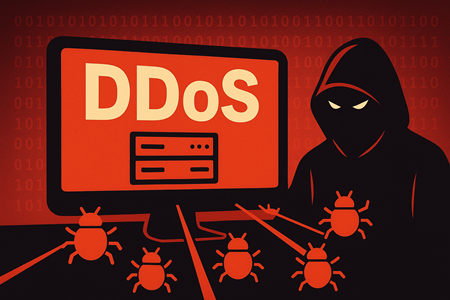
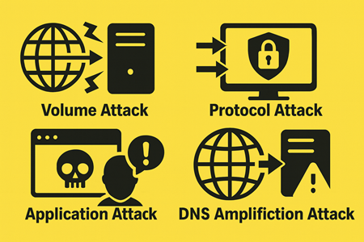
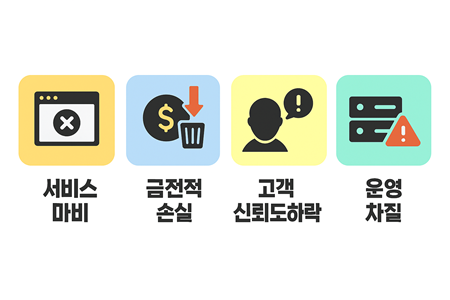

DDoS란?

DDos(Distributed Denial Of Service:분산 서비스 거부) 공격은 수많은 컴퓨터나 장치(봇넷)을 동원해 특정 서버, 웹사이트에 과도한 트래픽을 집중시켜서
정상적인 서비스를 마비시키는 해킹 기법입니다.
즉, 다수의 감염된 장치를 이용해 특정 서버나 웹사이트에 대량의 요청을 보내 서비스 불능을 유발하는 것입니다.
직접 침입이나 데이터 탈취보다는 서비스 불능 상태를 일으키는 것이 목적입니다.
공격자는 악성코드로 수천~수만 대의 PC, IoT 기기를 감염시켜 원격 제어 가능한 봇넷을 구축합니다.
이후 C&C(Command & Control) 서버를 통해 봇넷을 제어하며, 목표 시스템에 동시에 요청을 보내 과부하를 유발합니다.
C&C 서버는 명령 전달, 정보수집, 공격 조율 등의 역할을 수행합니다.
공격 방식

1. 체적 공격(Volumetric Attack): 대량의 데이터 패킷을 전송해서 네트워크 대역폭을 소모하여 정상 트래픽을 차단합니다.
2. 프로토콜 공격(Protocol Attack): 네트웤크 프로토콜의 취약점을 악용해 서버 자원을 고갈시킵니다. SYN Flood, Ping of Death 등이 이에 해당합니다.
3. 애플리케이션 공격(Application Attack): 웹 서버의 자원을 소모시키는 방식으로, HTTP GET/POST Flood 같은 요청 폭주를 통해 서비스 마비를 유발합니다.
4. DNS 증폭 공격: 작은 요청을 DNS 서버에 보내고, 서버가 훨씬 큰 응답을 목표 서버로 전달하도록 속여 트래픽을 증폭시키는 방식입니다.
또한 멀티 백터 공격 방법으로, 위의 여러 공격을 동시에 사용하여 방어 체계를 혼란시키고 대응을 어렵게 만들기도 합니다.
피해 유형

1. 서비스 마비: 웹사이트, 앱, 온라인 결제 시스템 등이 정상적으로 작동하지 않아 고객이 접속할 수 없게 됩니다.
이는 전자상거래, 금융, 공공 서비스 등 핵심 인프라에 직접적인 타격을 줍니다.
2. 금전적 손실: 서비스 중단으로 인한 매출 감소, 복구 비용, 추가 보완 투자 비용이 발생합니다.
일부 경우 공격자가 금전적 협박을 병행하여 피해를 가중시키기도 합니다.
3. 데이터 손상 위험: 직접적인 데이터 유출보다는 서버 과부하로 인한 시스템 오류, 데이터 손실 가능성이 존재합니다.
4. 운영 차질: 내부 직원들이 업무 시스템에 접근하지 못하거나, 네트워크가 마비되어 전체 조직의 생산성이 저하됩니다.
5. 법적 규제적 문제: 금융, 통신, 공공기관의 경우 서비스 중단이 법적 책임이나 규제 위반으로 이어질 수 있습니다.